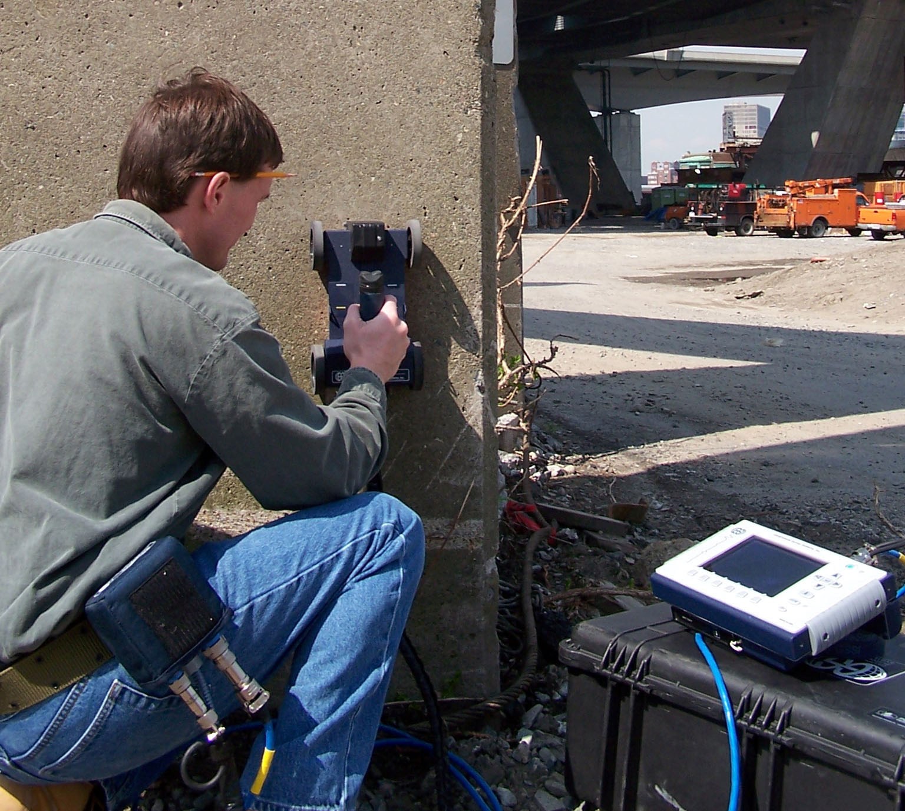
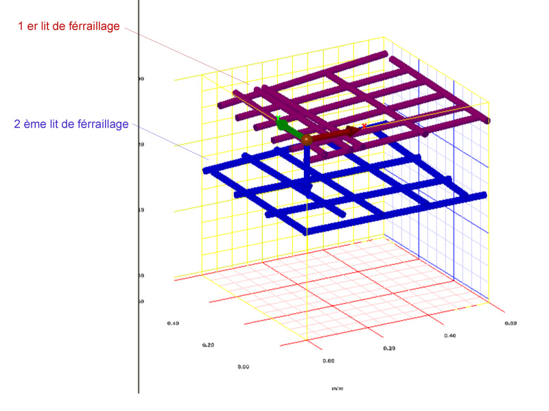

(+52) 55 8421 6546
contacto@grupo-geodectect.com




SERVICIOS NON-DESTRUCTIVOS
Detección y Cartografía de los Redes
Servicios non-destructivos de detección de los redes
- Tipos de Redes :
- Todos : Cables, tuberías, redes de telecomunicación, Eléctricos, Gas, Agua potable y saneamiento
- Aplicaciones :
- Ayuda a la perforación angular, Realización de sondeos, Actualización de los planos
- Solutiones :
- Marcado en el suelo, Planos o Cartografía (x,y,z), Imágenes en 3D
Mercado en el suelo
Some sample text

Cartografía 2D
Some sample text
Imagen 3D
Some sample text
Auscultación de la Obras
Inspección no destructiva de las estructuras
- Geodetect inspecciona sus obras para detectar :
- Cables, Acero y armazones, Objetos empotrados,Grosor del hormigón y zonas deterioradas
- Aplicaciones :
- Eliminación de peligros en la perforación, Control de la posición de las estructuras empotradas, Rehabilitación de una obra; Estructuras de diagnóstico
- Soluciones :
- Trazado en la obra, Imágenes y planos 2D, Imágenes 3D

Mercado en el suelo
Some sample text

Cartografía 2D
Some sample text

Imagen 3D
Some sample text
Exploración Geofísica
Servicio de geofísica para la minera y el medio ambiente
- Geodetect localiza diversas anomalías enterradas: :
- Depósito Potencial(oro, cobre, ...)Cavidades, tambores, zonas de contaminación, vertederos
- Aplicaciones :
- Recherches archéologiques, Aide au diagnostic de pollution, Repérage médico-légal ou d’agents explosifs
- Soluciones :
- Registro sísmico, Imágenes en 2D, Imágenes en 3D
Image del subsuelo
Some sample text
Cartografía 2D
Some sample text

Imagen 3D
Some sample text
Redes detectados : 554 Km
Planos actualizados : 223
Obras inspeccionadas : 125
QUIÉNES SON
La Empresa
GEODETECT es un gabinete de estudios geofísicos, especializado en auscultaciones non-destructivas del subsuelo y de labores.
Nuestra organización se basa en:
- Una experiencia en el oficio en detecciones geofisicas
- Un eompromiso de confianza basado en la calidad de la prestacion.
- Una estrategia de innovación a través de una red internacional.
Nuestras Aplicaciones son diversos:
- Vias y Redes diversas:
- Telecomunicaciones, electricidad, Iluminacion, Saneamineto
- Medio Ambiente:
- Contaminación del Suelo, Riesgos naturales, Médico-Legal
- Ingeniería Civil:
- Construccíon, Obras públicas, Geotécnica
- La Geosciencia:
- Minera, Arqueologia, Contaminacion del suelo
La Acreditacíon
GEODETECT es parte de un enfoque de Rendimiento y Certificación
Geodetect cuenta con personal calificado para todos los contextos:
- Electricidad Empoderamiento
- Gaz Empoderamiento
- Estándar Aplicación AFNOR
Geodetect es miembro de varias organizaciones internacionales:
- FNEDRE : Federación Nacional de las Empresas de Detección
- FSTT: Federación Nacional de Tecnología sin Zanjas
- AFTES : Asociación Internacional de Túneles y Espacios Subterráneos
Los Metodos
GEODETECT utiliza el mismo proceso mediante la combinación de varios métodos geofisicos
Nuestro proceso :
- Cosechas de datos y Inspección visual
- Misión de detección - Proceso de datos
- Presentación de los resultados
Métodos geofísicos principales utilizados :
- Radar Geofísica:
- Detección a través de la propagación y reflexión de las ondas electromagnéticas. Grabamos los ecos provocados por diferencias en las propiedades dieléctricas entre los diferentes materiales.
- Radiodeteccíon:
- Detección de las señales electromagnéticas emitidas sólo por las redes conductoras.
- Métodos geofísicos (bajo petición) :
- EM / CSAMT / IP / Tomografía Eléctrica ...
- Structurescan :
- Imaging o el diagnóstico de la estructura.
- Pachometría :
- Método de detección electro-magnética para refuerzos.
- Sclérométria :
- Medición de la dureza.
- Otros Métodos:
- para la medición de la velocidad de corrosión y el potential de corrosión.
contacto@grupo-geodectect.com
SUS BENEFICIOS
Profesionales
GEODETECT satisface sus necesidades de Detección, Cartografía y Auscultación.
GEODETECT- Gane en rentabilidad :
- realice sus obras con planos de précisíon
- Aumente su productividad :
- Elimine zanjas inútiles
- Vele por la seguridad de su personal:
- Evite peligros invisibles y trabaje con total tranquilidad
Administraciones
GEODETECT satisface sus necesidades de Detección, Cartografía y Auscultación.
- Gane en rentabilidad :
- Evite sanciones financieras en caso de daños
- Conozca a la perfección lo que contiene su subsuelo :
- Localice los redes que tiene en su territorio
- Benefíciese de su buena imagen de respeto al medio ambiente :
- Minimice los trastornos de la circulación ocasionados por los trabajos

Particulares
GEODETECT satisface sus necesidades de Detección y Auscultación.
- Conserve su propiedad tal como estaba al principio :
- Emprenda con tranquilidad sus proyectos personales de obras
- Esté tranquilo :
- Realice sus trabajos sin perjudicar a ninguna otra obra ya realizada
- Aumente su productividad :
- Elimine zanjas inútiles
-
Ellos confiaron en Nosotros !